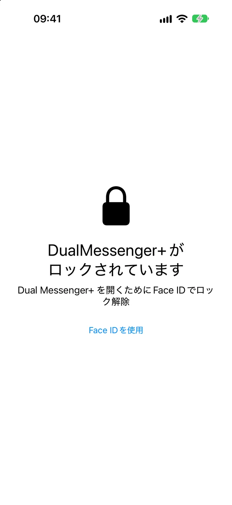
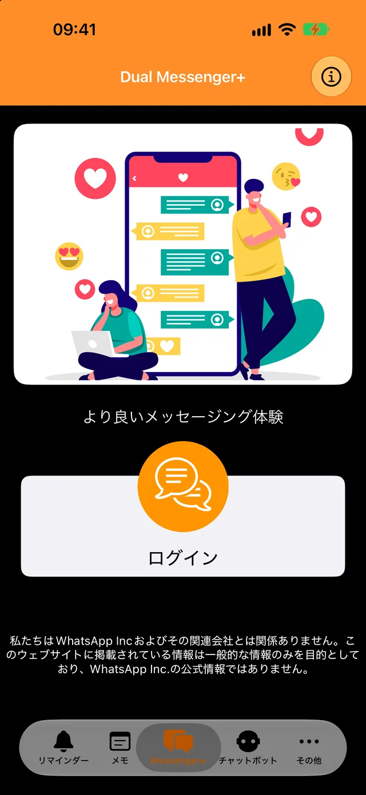
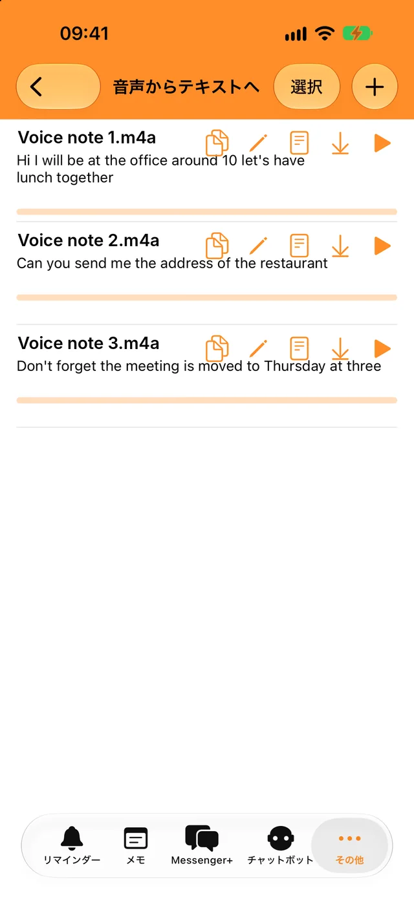
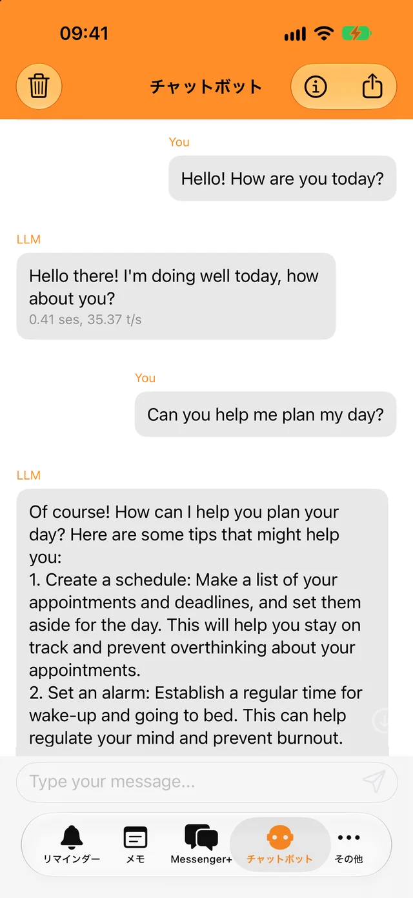
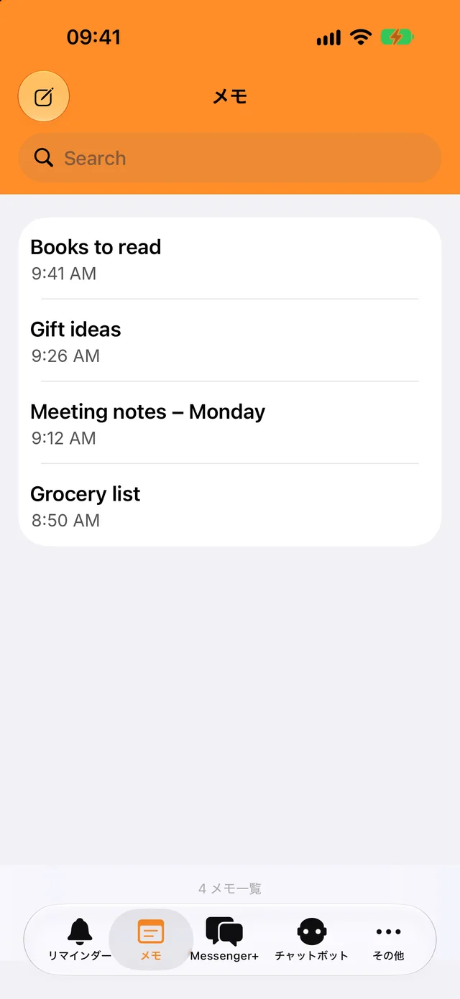

Face IDまたはパスコードでロック
アプリとチャットを開けるのは、あなただけです。すぐにロックするか、数分後にロックするかを選べます。
2つ目のアカウントを数秒で追加。仕事用と個人用のチャットを分けられます。
ダウンロード無料。iPhone、iPad、iPhone Duoに対応。

チャットを守るロックと、毎日使える便利なツールを1つのアプリに。

アプリとチャットを開けるのは、あなただけです。すぐにロックするか、数分後にロックするかを選べます。

ボイスメッセージやオーディオファイルをあなたの言語でテキスト化し、どこへでもコピーできます。

オフラインでもすぐに質問できます。ボットとの会話が端末の外に出ることはありません。

思いついたことを書き留め、検索で見つけ、リマインダーの時刻になると通知が届きます。
2つ目のWhatsAppアカウントが入っているスマートフォンを、少しの間だけ使います。
「ログイン」をタップします。画面にQRコードが表示されます。
「設定」＞「リンク済みデバイス」と進み、「デバイスをリンク」をタップします。
そのスマートフォンをQRコードに向けます。チャットがDual Messenger+で開きます。
スマートフォンで14日に1回以上WhatsAppを使っていれば、リンクしたデバイスはログインしたままになります。
Dual Messenger+には、メッセージを見ることができるサーバーがありません。アカウントの作成は不要で、アプリに広告やトラッカーもありません。
メモ、リマインダー、録音、ボットとの会話は、お使いのiPhoneまたはiPadに保存されます。
名前、メールアドレス、電話番号を私たちに伝える必要はありません。
Face IDとTouch IDは端末が処理します。アプリが生体情報を受け取ることはありません。